Users
Here, admin and HR would be able to add users individually or by bulk using the csv file provided for sample.The page now includes Active Users and Inactive Users tabs, allowing admins to easily toggle between and manage users based on their activity status within the system.Use full sync from M365 option only if you want to sync all the users
Note: Please fill details as per specified format in sample.
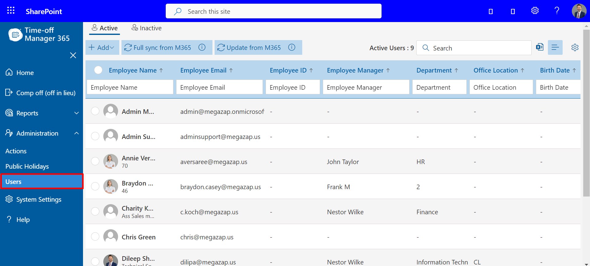
Users could be added by entering the details and assign different roles as per the requirement.
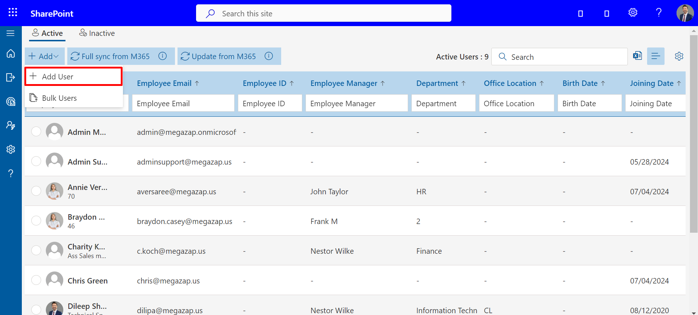
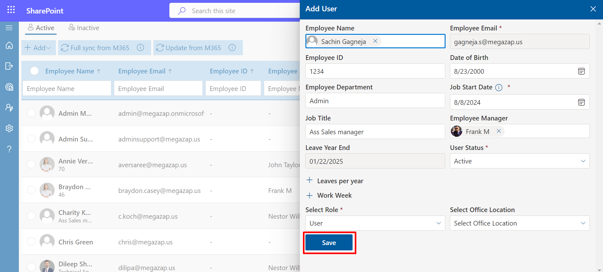
Here we add users in Bulk.
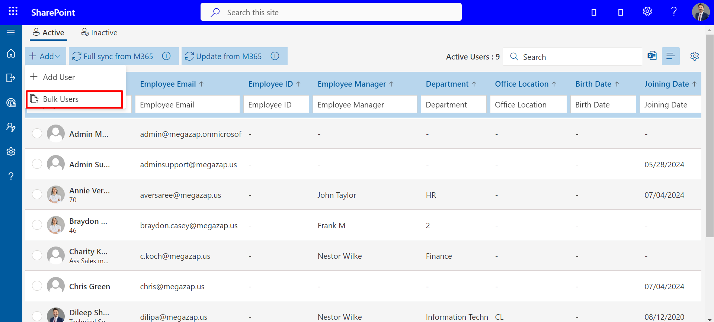
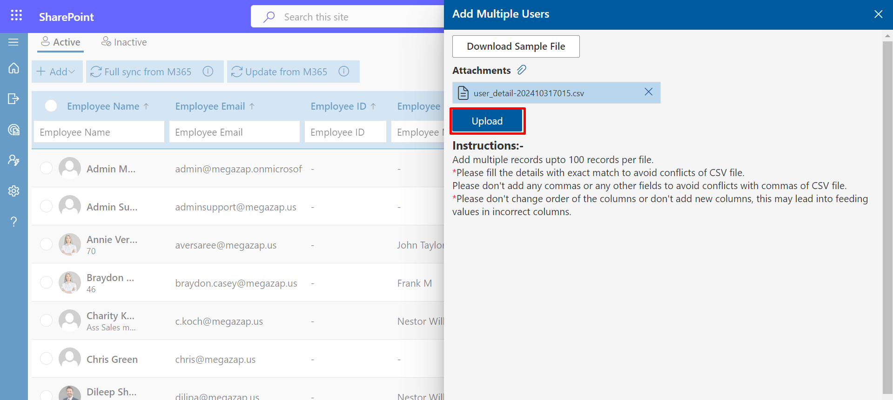
Bulk Updating Users
Administrators can update several employee records in one pass instead of editing each user individually. This is done from the Users page, using a downloadable Excel template that is filled in and re-uploaded through the Update Users panel. The guide below walks through the full process, from opening the panel to reviewing the upload results.
Step 1: Open the Users page
In the left-hand navigation, expand Administration and select Users. This opens the list of all active employees, showing details such as name, email, employee ID, manager, department, office location, and birth date.
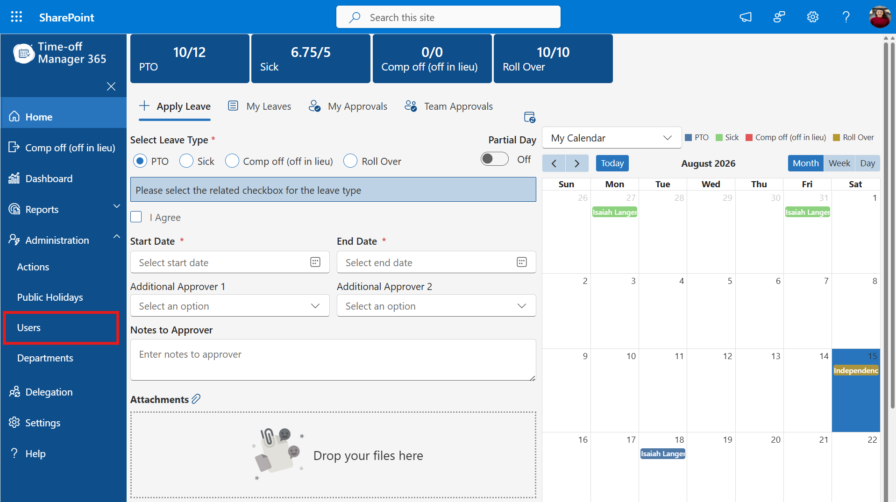
The Users item under Administration in the left-hand navigation menu.
Step 2: Open Update Users from the Add menu
On the Users page, click the Add dropdown above the user table. Three options appear: Add User, Bulk Users, and Update Users. Select Update Users to update the details of employees who are already in the system.
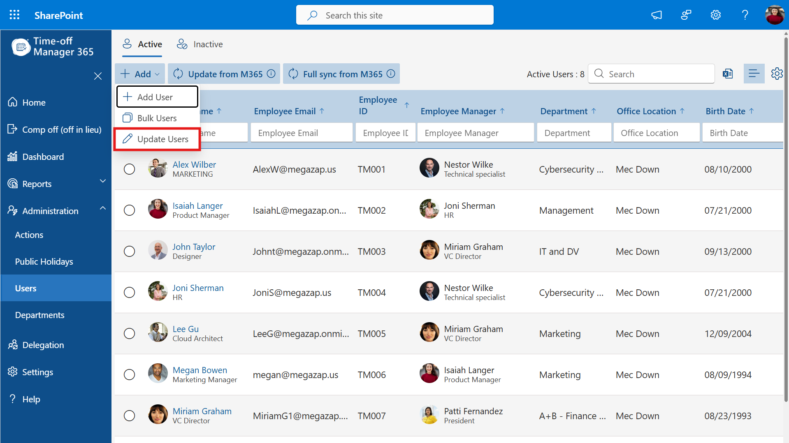
The Add dropdown on the Users page, with Update Users highlighted.
Step 3: Download the sample template
The Update Users panel opens on the right. Click Download Sample File to get an Excel template pre-filled with the current information for all active users. The panel also lists the upload instructions:
- ● Add multiple records in a single file.
- ● Fill details with an exact match to avoid conflicts.
- ● Do not add commas or extra fields.
- ● Provide all dates in MM/DD/YYYY format.
- ● Do not change the column order or add new columns.
- ● Work Week columns: Sun–Sat is the base week; *1/*2/*3 columns are rotation weeks 2–4; *4 columns (e.g. Monday4) are rotation week 5. Values are hours worked that day — 0 means a day off.
- ● Leave a cell blank to keep that field unchanged for that user.
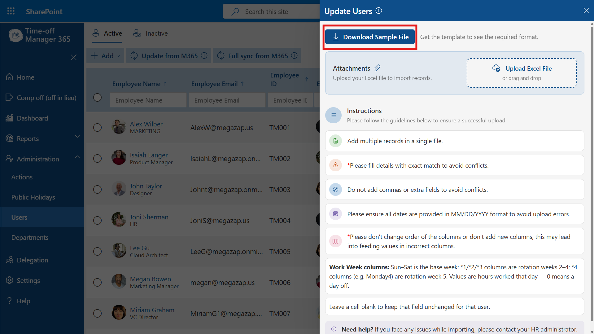
The Update Users panel, with the Download Sample File button highlighted.
Step 4: Edit the downloaded template
Open the downloaded file (for example, Update_Users_Template_08-15-2026.xlsx). Each row is one existing user, identified by Employee Email. Update whichever columns need to change — for example Department, Job Title, or Hire Date — and adjust the daily Work Week hours if a user's schedule has changed. Leave any cell blank to keep that field as it is. Save the file when finished.
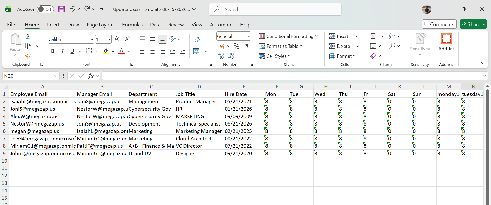
The Update Users template opened in Excel, showing Department, Job Title, Hire Date, and Work Week columns ready to edit.
Step 5: Attach the completed file
Back in the Update Users panel, click Upload Excel File (or drag and drop the file onto the upload area) and select your saved template. The file appears listed under Attachments, confirming it is ready to be processed.
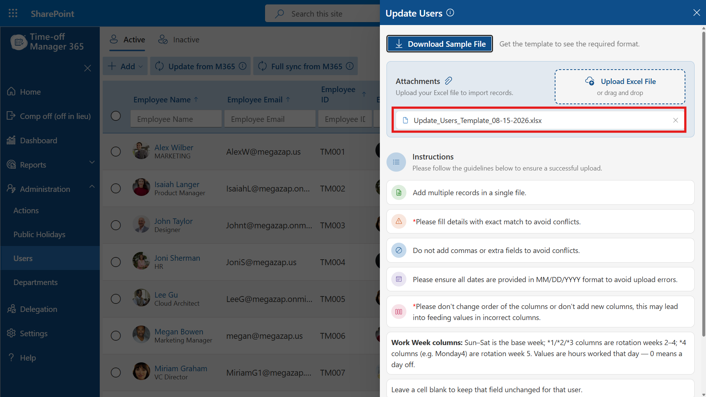
The uploaded file, Update_Users_Template_08-15-2026.xlsx, listed in the Attachments section of the Update Users panel.
Step 6: Click Upload to process the file
Scroll to the bottom of the panel and click Upload to submit the file for processing. The system reads each row and applies the changes to the matching user record.
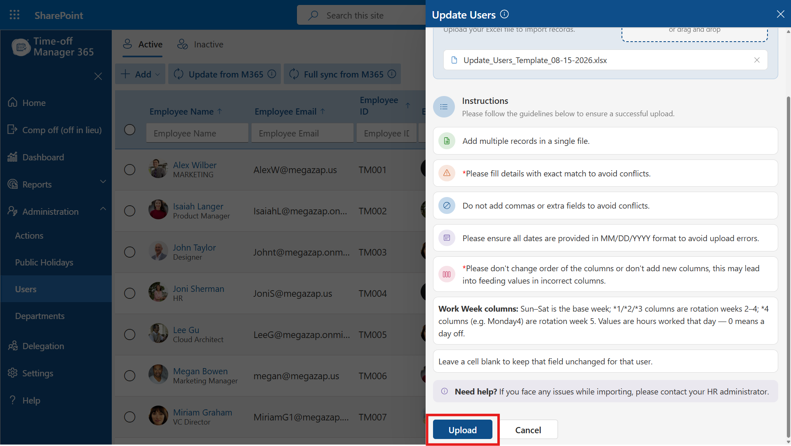
The Upload button at the bottom of the Update Users panel.
Step 7: Review the row results
Once processing finishes, the panel displays a results table summarizing the outcome for every row, including a total count of records updated and skipped. Each row shows its status (Updated or Skipped), the employee it applied to, and details of which fields were changed. Review this list to confirm the updates were applied as expected, or to spot any rows that were skipped due to a conflict.
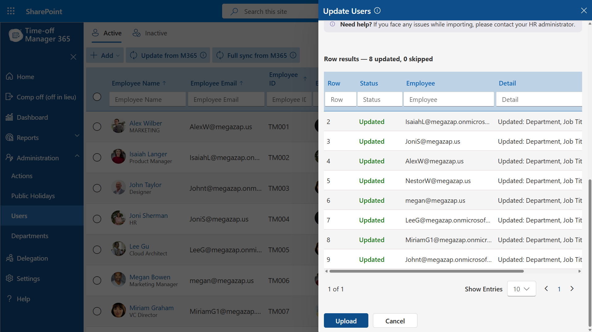
Row results after upload, showing each employee's update status and the fields that changed.
Tips
- ● If a row is skipped, check that the Employee Email exactly matches an existing active user and that the row follows the formatting rules above.
- ● Re-download the sample file before each bulk update to ensure you're working from the current list of active users and column order.
- ● Contact your HR administrator if you run into persistent upload issues.
Update from M365: This option allows administrators to refresh or update existing user details from Microsoft 365. It syncs only the latest changes (such as name, email, or role updates) for already added users without performing a full sync. To include or exclude specific groups before syncing, use the setting option on the right side of the page.
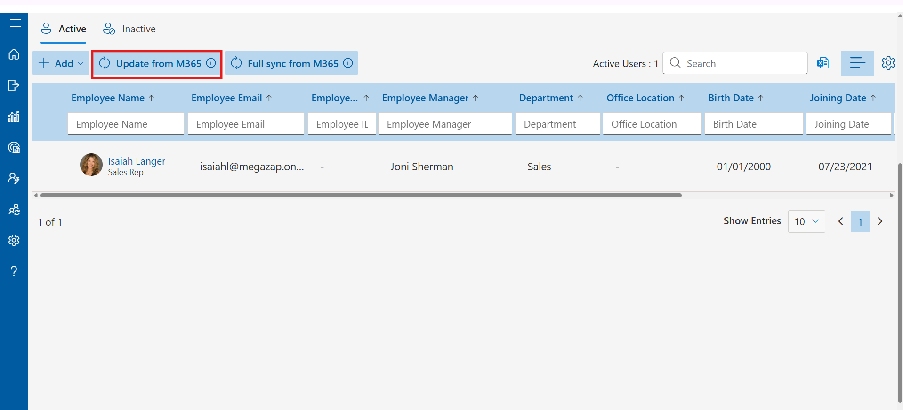
Click on Setting Icon.
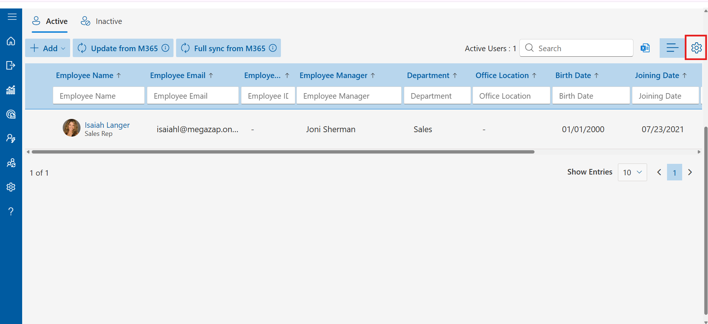
- Overwrite user details: If enabled, it updates existing user details during sync.
- Exclude Options / Sync M365 Groups: Choose to either exclude specific user types or sync users based on M365 groups.
- Exclude Sign in Blocked Users: Prevents blocked users from being synced.
- Exclude Shared Mailboxes: Shared mailboxes will not be included in the sync.
- Exclude Unlicensed Users: Filters out users without any license.
- Exclude Licensed Users: Excludes users with licensed or free license and a valid subscription.
- Exclude Free Licensed Users: Removes users who only have a free license.
- Exclude User by Department: Allows filtering users by department.
- Exclude User by Location: Lets you exclude users based on their location.
- Exclude User by Title: Filters users by their job title.
- Excluded Domain: Prevents users from specific domains from being included.
- Exclude Users by Name: Specific user names can be excluded from syncing.